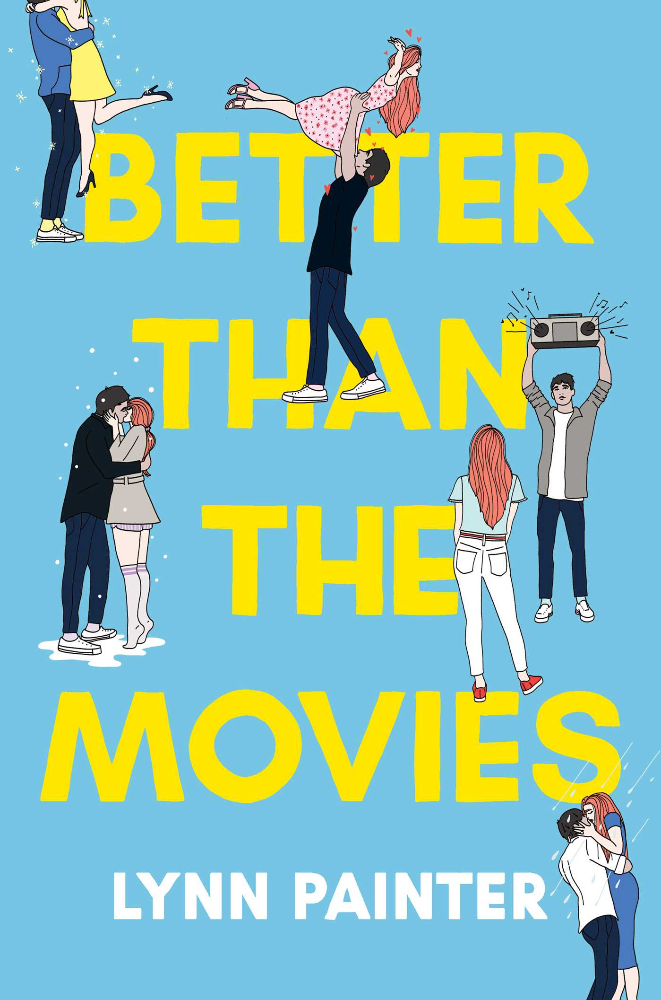
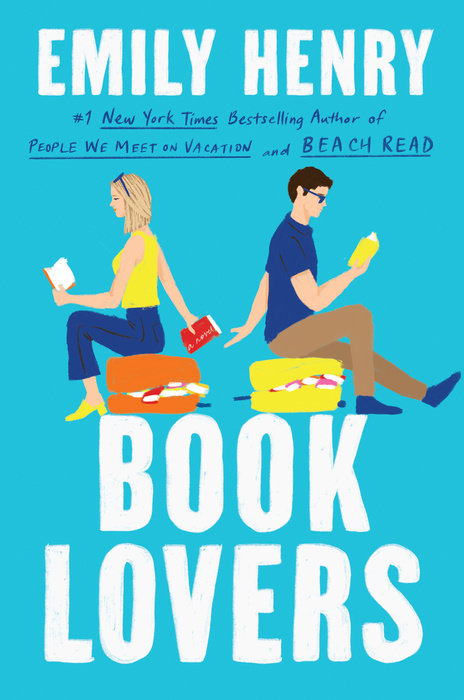
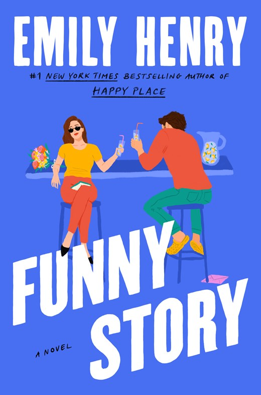
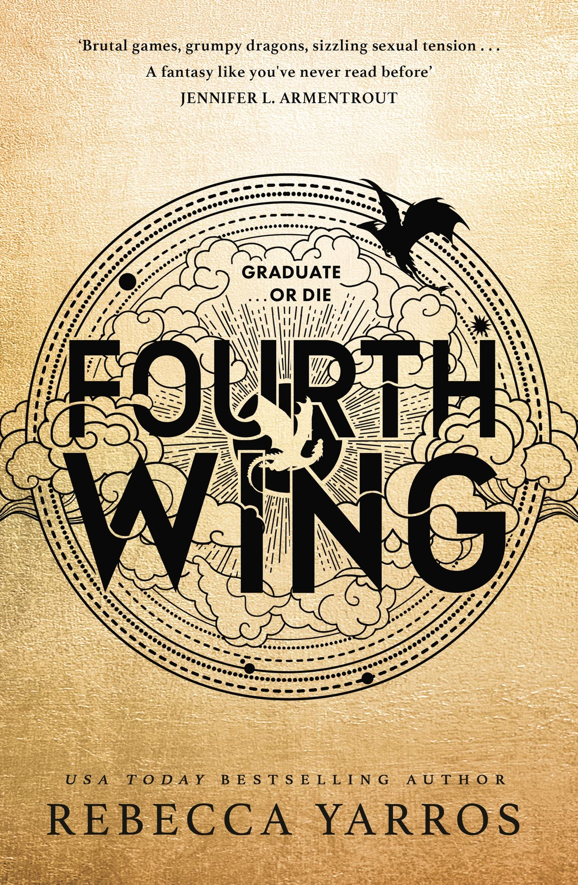
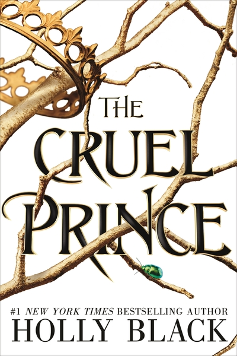
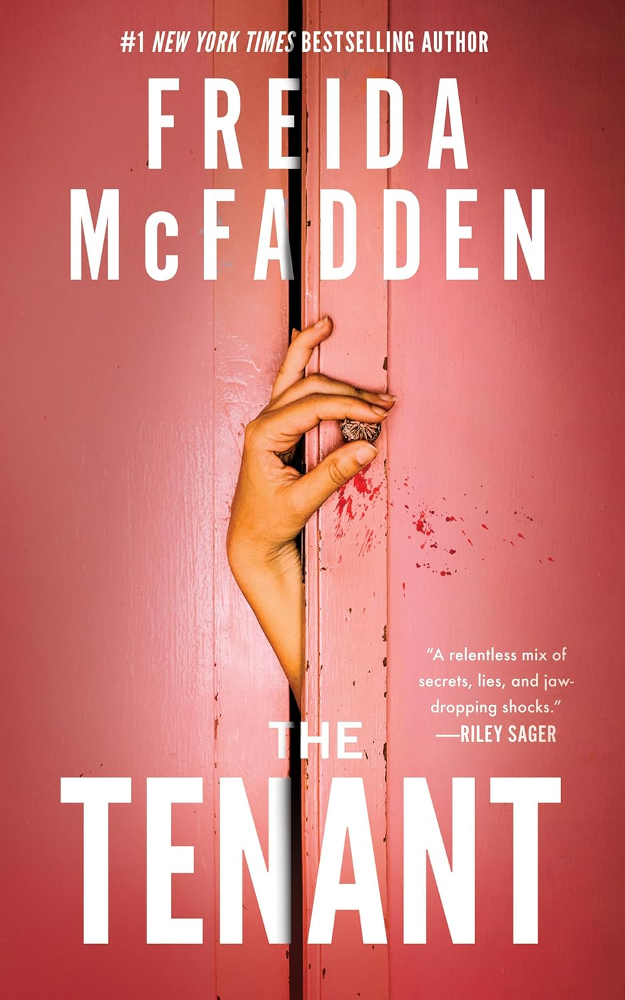
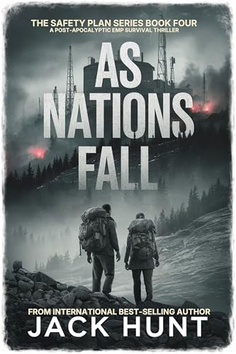

Book Recommendations
Looking for your next book? Our recommendations include a variety of genres and stories for different types of readers. Whether you enjoy romance, fantasy, or thrillers, there is always something new to discover.
These are some of the books we would recommend to readers who are looking for an entertaining story with interesting characters and something to talk about. If you are not sure what to read next, this page is a good place to start.
Romance

Better Than the Movies
by Lynn Painter
If you enjoy romantic comedies, Better Than the Movies is a fun choice. The story follows Liz Buxbaum, a hopeless romantic who wants to finally get the attention of her longtime crush. She ends up teaming up with her annoying but charming neighbor Wes, and the two begin to realize that their plan might lead to something more.
This is a great recommendation for readers who love rom-coms, enemies-to-lovers stories, and characters who have more chemistry than they expected. The book is also worth reading if you have seen the movie because it gives you more time with the characters and story.

Book Lovers
by Emily Henry
Book Lovers follows Nora Stephens, a literary agent who loves books and is used to being the person who does not get the typical romantic ending. During a trip to a small town with her sister, Nora keeps running into Charlie Lastra, a book editor she already knows from New York.
This book is a good choice for readers who enjoy witty conversations, complicated relationships, family, and characters who slowly learn more about themselves. It also has a fun connection to the book world since both main characters work in publishing.

Funny Story
by Emily Henry
Funny Story follows Daphne, whose fiancé leaves her for his childhood best friend just before they are supposed to start their new life together. Daphne ends up living in Michigan and unexpectedly becomes roommates with Miles, who is the ex of the woman her fiancé left her for.
What starts as an awkward living situation turns into an unexpected friendship. The story has humor, romance, and plenty of complicated feelings as Daphne starts building a new life for herself. It is a good recommendation for readers who enjoy Emily Henry's mix of funny moments and emotional storylines.
Fantasy

Fourth Wing
by Rebecca Yarros
Fourth Wing follows Violet Sorrengail, who expected to train as a scribe but is forced to enter Basgiath War College to become a dragon rider. The training is dangerous, competitive, and designed to test the limits of every student.
Violet has to figure out how to survive while dealing with dragons, dangerous competitors, enemies, and unexpected relationships. This is a great choice for readers who enjoy fantasy, romance, action, and high-stakes stories.

The Cruel Prince
by Holly Black
The Cruel Prince follows Jude, a human girl who has grown up in the world of the fae. Even though she wants to belong in this magical world, she is constantly reminded that she is human.
Jude becomes involved in the dangerous politics of the fae court and finds herself caught between power, secrets, and complicated relationships. This recommendation is a good fit for readers who enjoy fantasy worlds, magic, political conflicts, and characters who are not always easy to trust.
Thrillers

The Tenant
by Freida McFadden
The Tenant follows Blake Porter, who is struggling financially after losing his job and falling behind on the mortgage for his new home. He and his fiancée decide to rent out a room, and Whitney seems like the perfect tenant.
Things quickly become strange after Whitney moves in. Neighbors begin acting differently toward Blake, strange noises come from the house, and an unpleasant smell refuses to go away. Blake starts to wonder whether he really knows the person living under his roof. This is a good choice for readers who enjoy psychological thrillers, secrets, and unexpected twists.

As Nations Fall
by Jack Hunt
As Nations Fall is a fast-paced thriller for readers who enjoy stories involving danger, survival, and a world that is quickly changing. The story focuses on the larger consequences of a crisis and the people trying to survive while everything around them begins to fall apart.
This recommendation is a good choice if you want something different from a traditional psychological thriller. It is especially suited for readers who enjoy suspense, action, high-stakes situations, and stories about what people will do to survive.
Still Looking?
If you want to see books we have already read, visit our Past Reads page. You can also check out our Current Read to see what the club is reading right now.
You can also visit Goodreads to discover more books, authors, and reader recommendations.